Industrial process & packaging machinery
From dust collectors and pulverizers to mixers, dryers, conveyors and packaging lines. Every machine is custom-engineered and turnkey-supplied by ART Mechatronics.
All machines
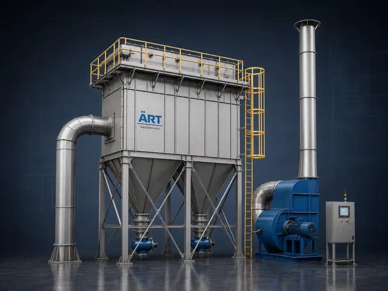
Dust Collector Machine
A Dust Collector Machine is an essential industrial pollution control system designed to remove dust, fumes, and…
View details →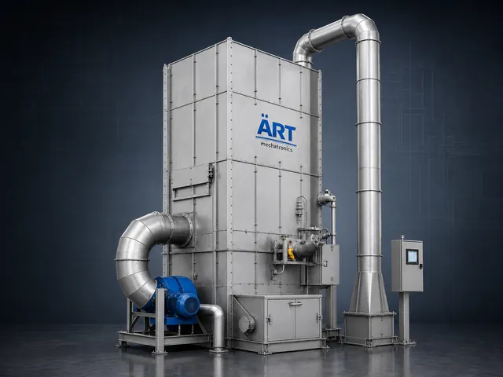
De-Dusting System
A De-Dusting System Machine is an advanced industrial dust control solution designed to capture, extract, and filter…
View details →
Centralised Dust Collection System
A Centralized Dust Collection System is an advanced industrial air pollution control solution designed to capture,…
View details →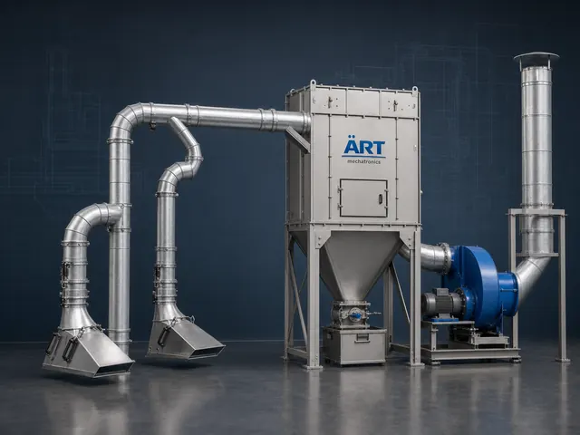
Dust Extraction System
A Dust Extraction System is an essential industrial air pollution control solution designed to capture, extract, and…
View details →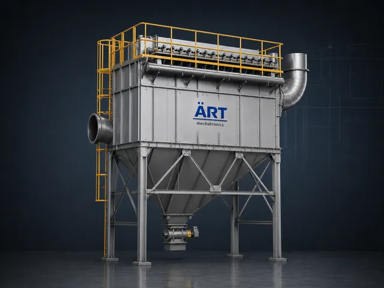
Bag House Dust Collector Machine
A Bag House Dust Collector Machine, also known as a Bag Filter Dust Collector, is a highly efficient industrial air…
View details →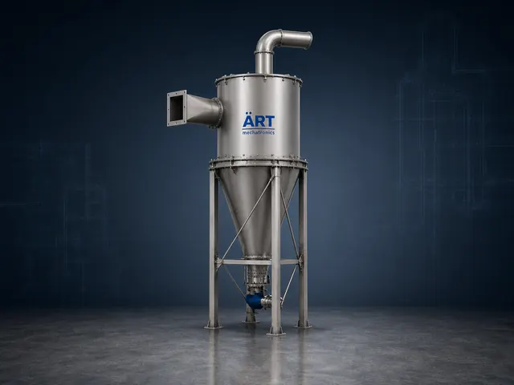
Cyclone Dust Collector Machine
A Cyclone Dust Collector Machine, also known as an Industrial Cyclone Separator, is a highly efficient mechanical dust…
View details →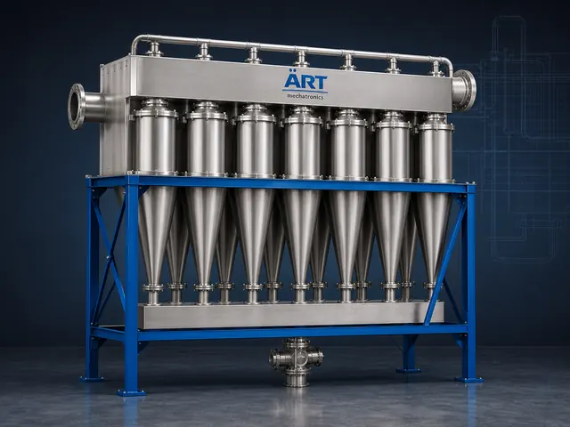
Multiclone Dust Collector Machine
A Multi Cyclone Dust Collector Machine, also known as a Multiclone Separator or Multi Cyclone Dust Collector, is an…
View details →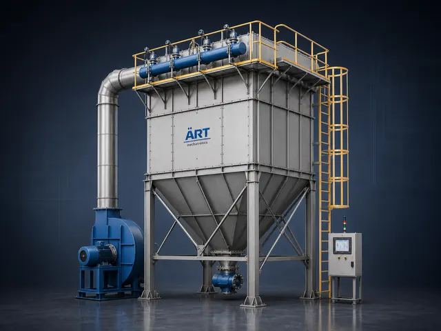
Pulse Jet Dust Collector Machine
A Pulse Jet Dust Collector Machine, also known as a Pulse Jet Bag Filter or Pulse Jet Baghouse, is an advanced…
View details →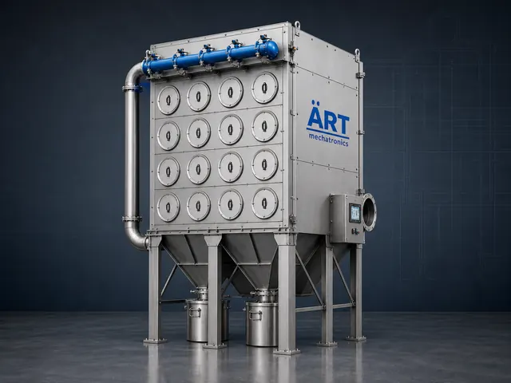
Cartridge Dust Collector Machine
A Cartridge Dust Collector Machine, also known as a Cartridge Filter Dust Collector, is a compact and highly efficient…
View details →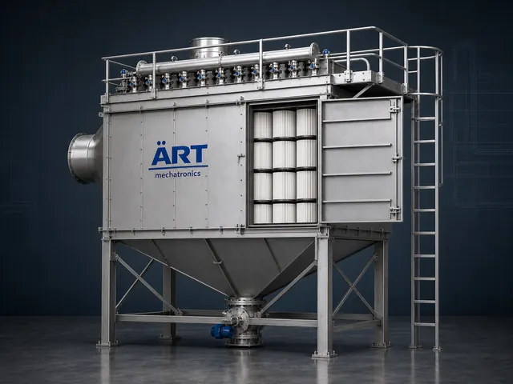
Pleated Dust Collector Machine
A Pleated Dust Collector Machine, also known as a Pleated Filter Dust Collector or Pleated Bag Filter System, is an…
View details →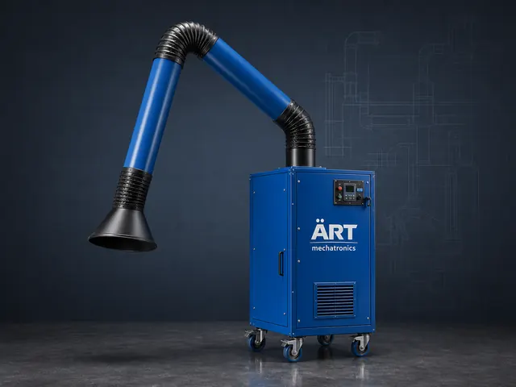
Fume Extraction System
A Fume Extraction System is an advanced industrial air pollution control solution designed to capture, extract, and…
View details →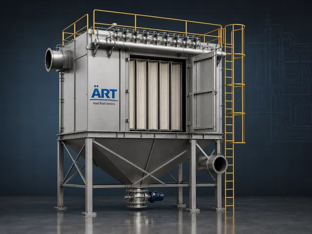
Flat Bag Dust Collector Machine
A Flat Bag Dust Collector Machine, also known as a Flat Bag Filter or Panel Bag Dust Collector, is an advanced…
View details →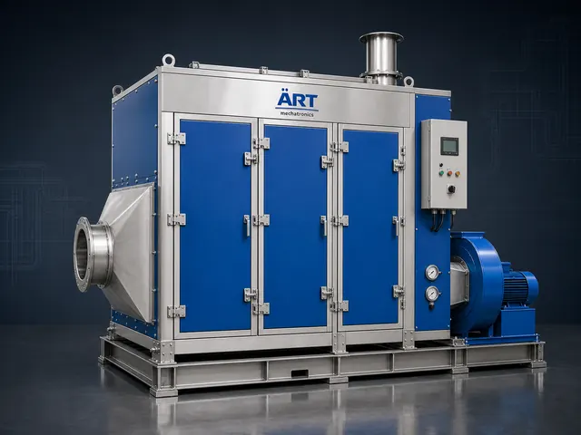
Air Pollution Control Equipment
Air pollution control equipment plays a critical role in modern industries by controlling, filtering, and eliminating…
View details →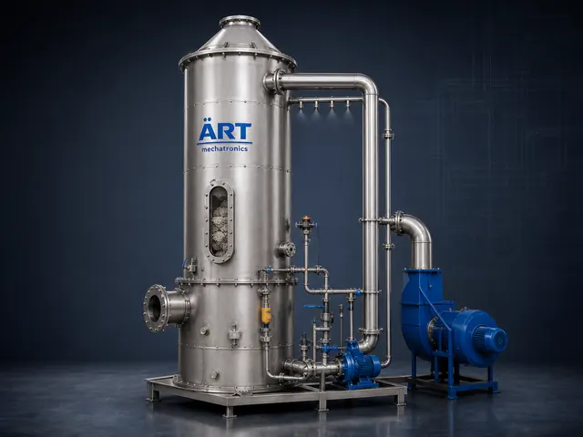
Wet Scrubber
A Wet Scrubber System is an advanced industrial air pollution control device designed to remove gases, fumes, vapors,…
View details →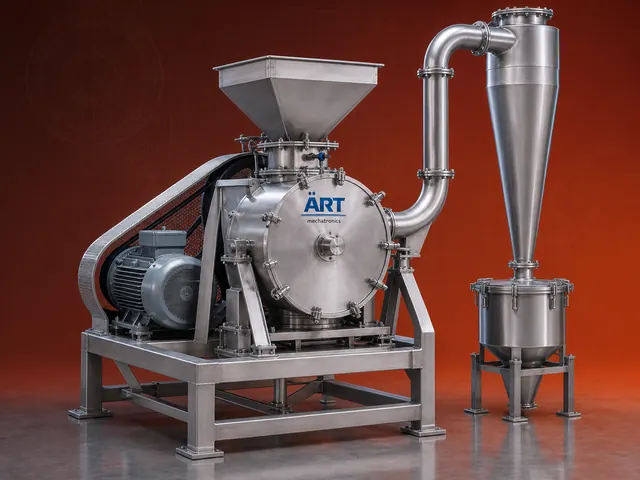
Impact Pulverizer Machine
An Impact Pulverizer Machine is a high-speed grinding system designed for fine pulverization of materials into uniform…
View details →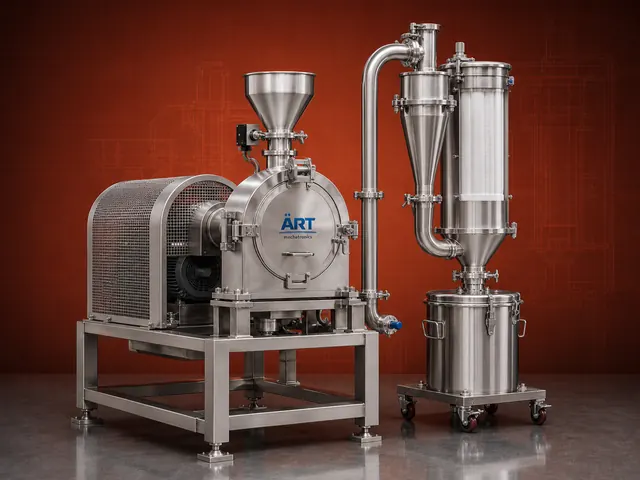
Micro Pulverizer Machine
A Micro Pulverizer Machine is an advanced high-speed grinding system designed for ultra-fine pulverization of…
View details →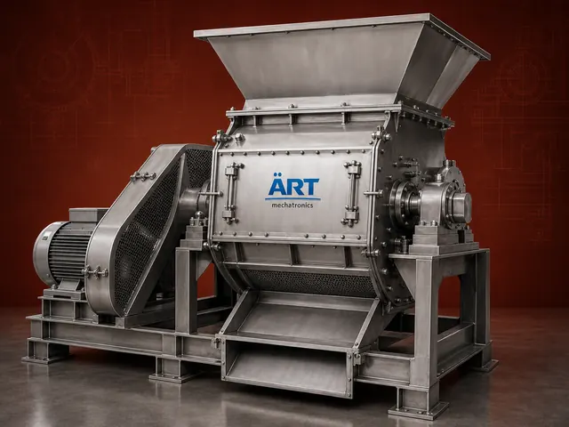
Hammer Mill Machine
A Hammer Mill Machine is a robust industrial grinder designed to crush, shred, and grind a wide range of materials…
View details →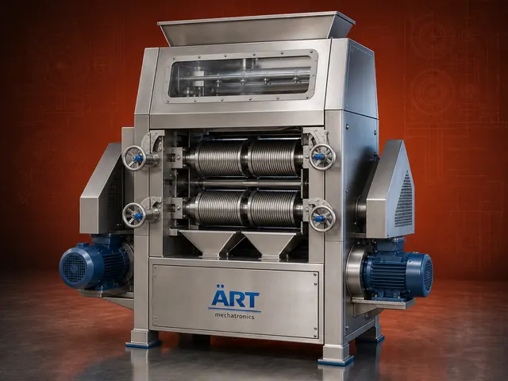
Roller Mill Machine
A Roller Mill Machine, also known as an Industrial Roller Mill or Roller Grinding Mill, is a highly efficient grinding…
View details →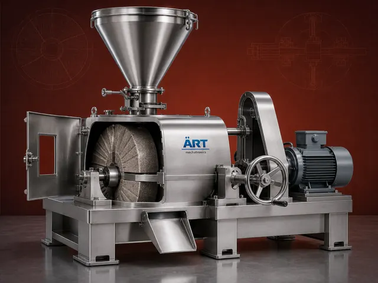
Stone Mill Machine
A Stone Mill Machine, also known as an Atta Chakki or Stone Grinder, is a traditional yet highly effective grinding…
View details →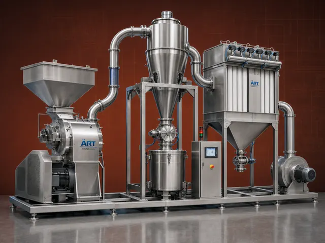
Pulverizer With Dust Collector
A Pulverizer with Dust Collector is an advanced integrated system that combines high-speed grinding with efficient…
View details →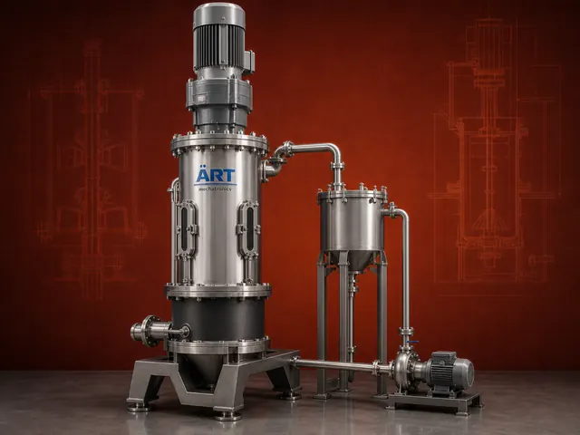
Grinding Mill Machine
A Grinding Mill Machine is a versatile industrial system designed for size reduction, pulverization, and fine grinding…
View details →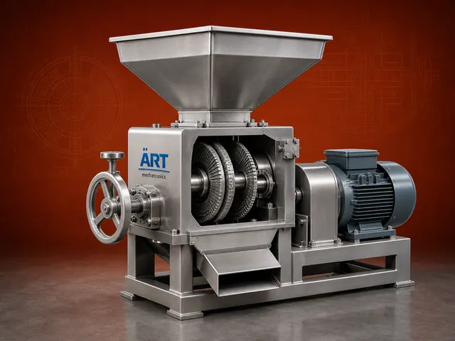
Milling Machine
A Milling Machine is an essential industrial system used for grinding, processing, and size reduction of raw materials…
View details →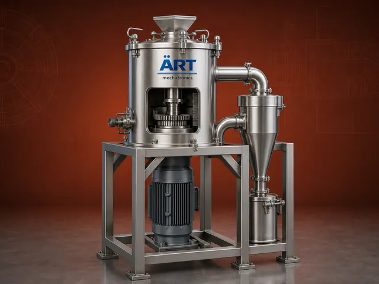
Grinding Machine
A Grinding Machine is a versatile industrial system used for size reduction, pulverization, and fine grinding of…
View details →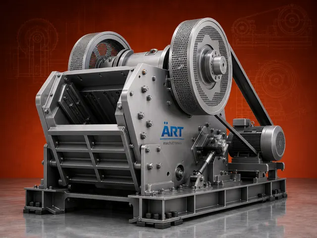
Crushing Machine
A Crushing Machine, also known as an Industrial Crusher Machine, is a heavy-duty equipment used for breaking down…
View details →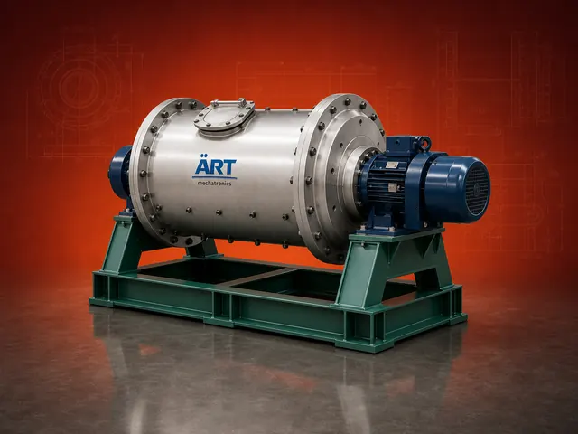
Ball Mill Machine
A Ball Mill Machine, also known as an Industrial Ball Mill or Ball Grinding Mill, is a highly efficient grinding…
View details →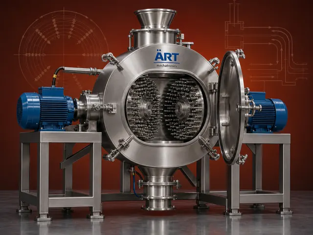
Pin Mill Machine
A Pin Mill Machine, also known as an Industrial Pin Mill or Pin Mill Grinder, is a high-speed grinding system designed…
View details →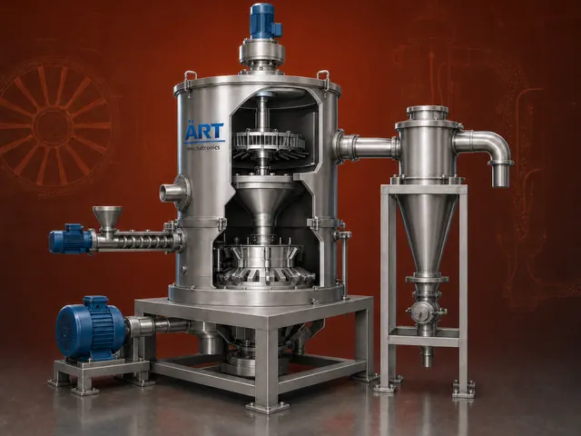
Air Classifier Mill Machine
An Air Classifier Mill Machine (ACM) is an advanced grinding system designed for ultra-fine pulverization and precise…
View details →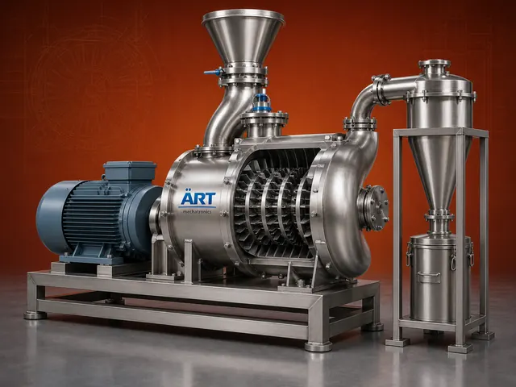
Powderizer Machine
A Powderizer Machine, commonly known as a Pulverizer Machine or Powder Grinding Machine, is an industrial system…
View details →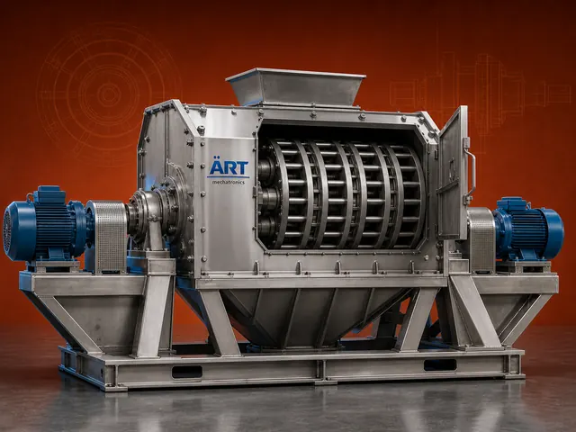
Disintegrator Machine
A Disintegrator Machine, also known as an Industrial Disintegrator or Disintegrator Mill, is a high-speed size…
View details →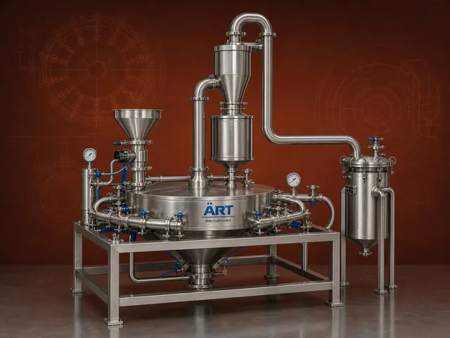
Micronizer Machine
A Micronizer Machine, also known as a Micronizing Mill or Jet Mill Micronizer, is an advanced grinding system designed…
View details →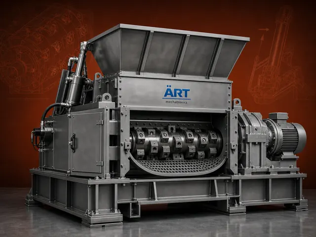
Shredder Machine
A Shredder Machine, also known as an Industrial Shredder or Waste Shredder, is a powerful size reduction equipment…
View details →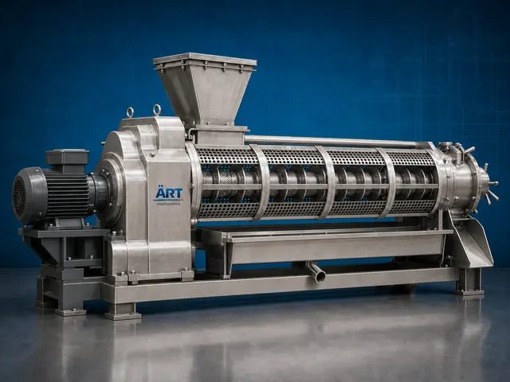
Expeller Machine
An Oil Expeller Machine, also known as a Cold Press Oil Machine or Oil Press Machine, is an advanced mechanical system…
View details →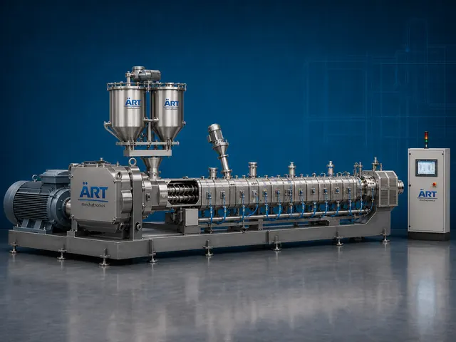
Extruder Machine
An Extruder Machine, also known as an Industrial Extrusion Machine, is a highly versatile system used for shaping,…
View details →
Batch Type - Hot Air Dryer
A Batch Type Dryer Machine, also known as an Industrial Hot Air Dryer or Food Drying & Roasting System, is a specially…
View details →
Fluidized Bed Dryer (FBD)
A Fluidized Bed Dryer (FBD), also known as a Fluid Bed Dryer, is an advanced drying system used for uniform and rapid…
View details →
Rotary Dryer, Drum Dryer
A Rotary Dryer Machine, also known as a Rotary Drum Dryer, is a highly efficient industrial drying system used for…
View details →
Tray Dryer, Tray Oven
A Tray Dryer Machine, also known as a Tray Oven or Hot Air Tray Dryer, is a highly efficient batch drying system…
View details →
Rotary Rack Oven
A Rotary Rack Oven, also known as a Rack Oven Machine or Industrial Bakery Oven, is a high-efficiency baking system…
View details →
Hot Air Generator
A Hot Air Generator (HAG), also known as an Industrial Hot Air Furnace or Hot Air Heater, is a high-efficiency thermal…
View details →
Continuous Conveyor, Tunnel Dryer
A Continuous Conveyor Type Tunnel Dryer Machine, also known as a Tunnel Dryer or Conveyor Dryer, is an advanced…
View details →
Spray Dryer
A Spray Dryer Machine, also known as an Industrial Spray Drying System, is an advanced technology used to convert…
View details →
Rotocone Vacuum Dryer - Rcvd (RCVD)
A Rotocone Vacuum Dryer (RCVD), also known as a Conical Vacuum Dryer or Vacuum Dryer Machine, is an advanced…
View details →
Fryer Machine
A Fryer Machine, also known as an Industrial Deep Fryer or Food Frying System, is an essential processing equipment…
View details →
Cooking Kettle, Boiling Tank
A Tilting Cooking Tank, also known as a Boiling Tank, Steam Jacketed Kettle, or Cooking Vessel, is a versatile…
View details →
Boiler Machine
A Boiler Machine, also known as an Industrial Steam Boiler or Steam Generation System, is a critical industrial…
View details →
Thermic Fluid Heater
A Thermic Fluid Heater, also known as a Thermal Oil Heater or Hot Oil Heater, is a highly efficient industrial heating…
View details →
Rotary Tube Dryer
A Rotary Tube Dryer Machine, also known as a Tube Bundle Dryer or Indirect Rotary Dryer, is an advanced industrial…
View details →
Furnace Burner
An Industrial Furnace Burner, also known as a Gas Burner, Diesel Burner, Oil Burner, or Solid Fuel Burner, is a…
View details →
Heat Exchanger
A Heat Exchanger is an essential industrial system designed to transfer heat between two fluids without mixing them,…
View details →
Heat Recovery Unit - Hru (HRU)
A Heat Recovery Unit (HRU), also known as a Waste Heat Recovery System, is an advanced energy-saving solution designed…
View details →
Incinerator Machine
An Incinerator Machine, also known as an Industrial Waste Incinerator or Waste Disposal Incinerator, is a specialized…
View details →
Flash Dryer
A Flash Dryer Machine, also known as a Pneumatic Dryer or Flash Drying System, is a high-speed industrial drying…
View details →
Industrial Roaster Machine
An Industrial Roaster Machine, also known as a Nut Roaster, Seed Roasting Machine, or Food Roasting System, is a…
View details →
Blancher Machine
A Blancher Machine, also known as a Blanching Machine or Industrial Blancher, is a critical food processing equipment…
View details →
Hot Water Generator
A Hot Water Generator, also known as an Industrial Hot Water Heater or Thermic Water Heating System, is a highly…
View details →
Steam Generator
A Steam Generator Machine, also known as an Industrial Steam Generator or Instant Steam Generator, is a compact and…
View details →
Air Duct Heater
Electric Duct Heaters and Air Heater Banks are advanced heating systems designed to heat air using electric heating…
View details →
Pasteurizer Machine
A Pasteurizer Machine, also known as a Milk Pasteurizer or Industrial Pasteurization System, is a critical food…
View details →
Retort / Autoclave Machine
A Retort Machine, also known as an Autoclave Sterilization Machine or Retort Sterilizer, is a critical processing…
View details →
Jacketed Tank
A Jacketed Tank, also known as a Jacketed Vessel or Industrial Mixing Tank, is a versatile process equipment designed…
View details →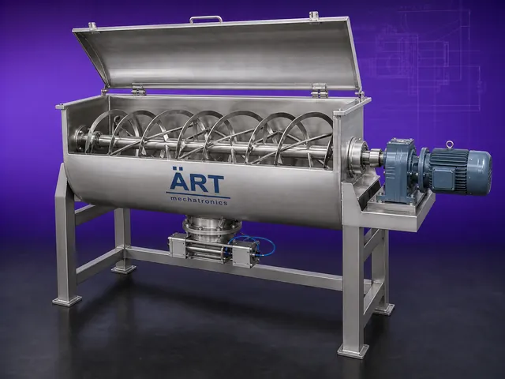
Ribbon Mixer
A Ribbon Blender Machine, also known as a Ribbon Mixer or Industrial Powder Blender, is one of the most widely used…
View details →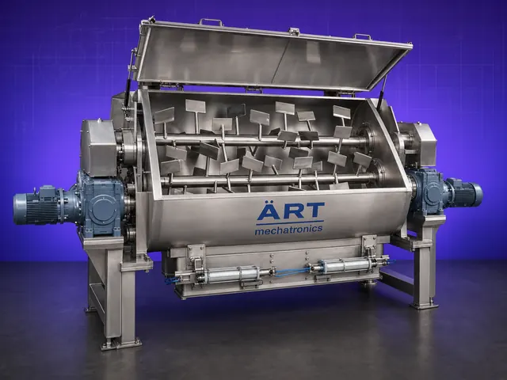
Paddle Mixer
A Paddle Mixer Machine, also known as a Paddle Blender or Industrial Paddle Mixing System, is a highly efficient…
View details →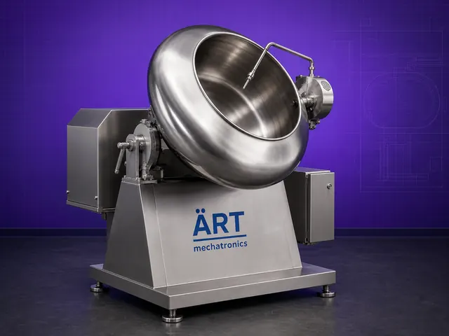
Coating Pan Mixer
A Coating Pan Mixer Machine, also known as a Coating Pan, Seasoning Drum, or Flavor Coating Machine, is an industrial…
View details →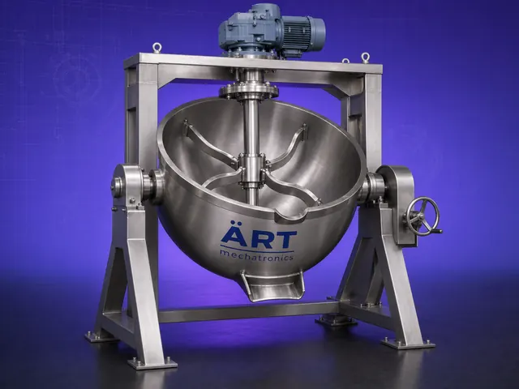
Handa Mixer
A Handa Mixer Machine, also known as a Handa Blender, Batch Mixer, or Industrial Mixing Pan Machine, is a widely used…
View details →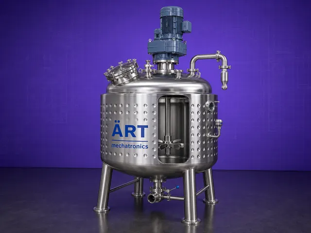
Agitator Mixer Machine
An Agitator Mixer Machine, also known as an Industrial Liquid Mixer, Agitated Tank, or Agitated Mixing Vessel, is a…
View details →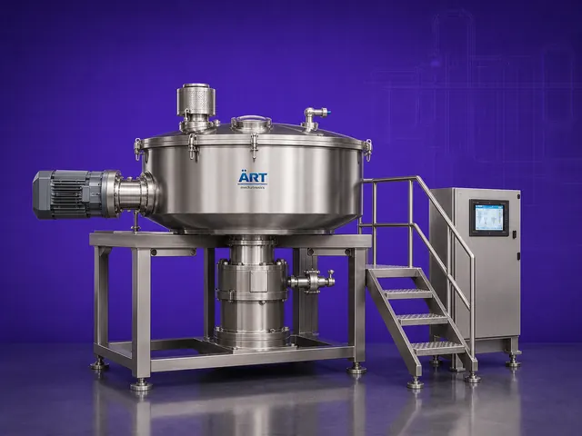
Rapid Mixer Granulator - Rmg (RMG)
A Rapid Mixer Granulator (RMG) Machine, also known as a High Shear Granulator or Wet Granulation Machine, is an…
View details →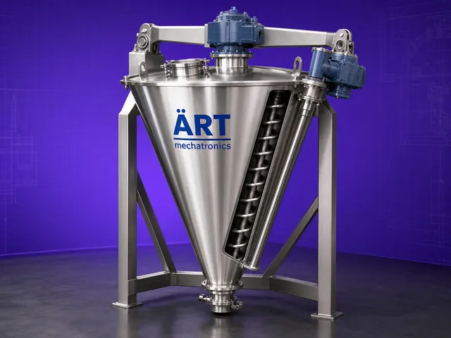
Conical Screw Mixer
A Conical Screw Mixer Machine, also known as a Conical Screw Blender, Vertical Cone Mixer, or Nauta Mixer, is an…
View details →
Plow Mixer
A Plow Mixer Machine, also known as a Ploughshare Mixer or High-Speed Industrial Blender, is an advanced industrial…
View details →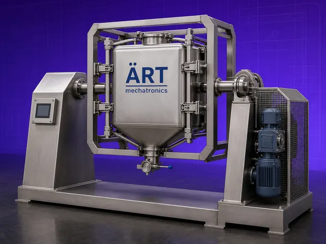
Capsule Mixer
A Capsule Mixer Machine, also known as a Capsule Blending Machine or Pharmaceutical Powder Mixer, is a specialized…
View details →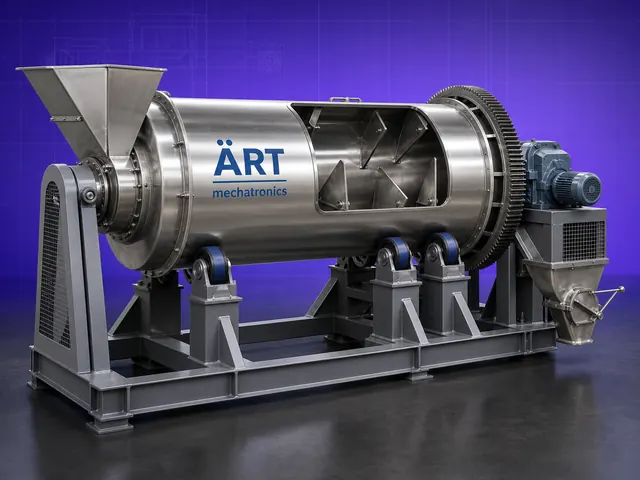
Rotary Mixer
A Rotary Drum Mixer Machine, also known as a Rotary Mixer, Drum Blender, or Rotating Drum Mixing Machine, is a highly…
View details →
Drum Mixer
A Drum Mixer Machine, also known as an Industrial Drum Blender or Rotary Drum Mixing Machine, is a versatile…
View details →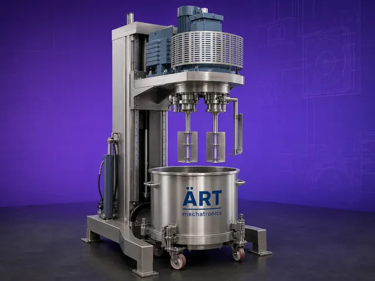
Planetary Mixer
A Planetary Mixer Machine, also known as an Industrial Planetary Mixer or Planetary Blending System, is a specialized…
View details →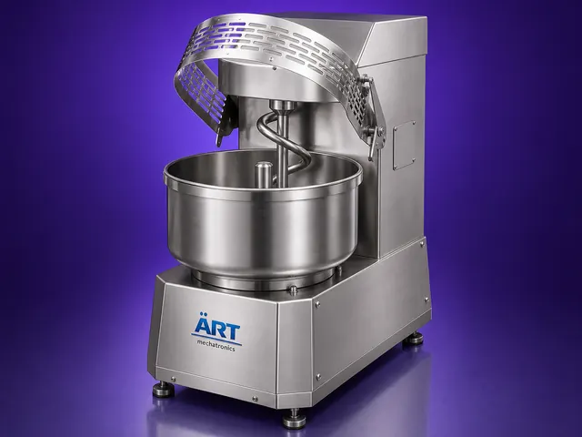
Spiral Mixer
A Spiral Mixer Machine, also known as a Spiral Dough Mixer or Bakery Spiral Blender, is a specialized industrial…
View details →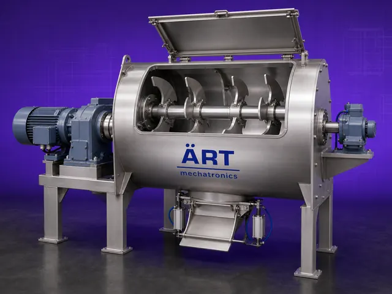
Plough Shear Mixer
A Plough Shear Mixer Machine, also known as a Ploughshare Mixer or Plough Shear Blender, is an advanced industrial…
View details →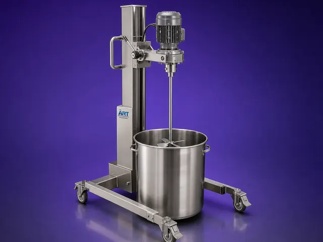
Stirrer Machine
A Stirrer Machine, also known as an Industrial Stirrer, Liquid Agitator, or Mixing Stirrer System, is a widely used…
View details →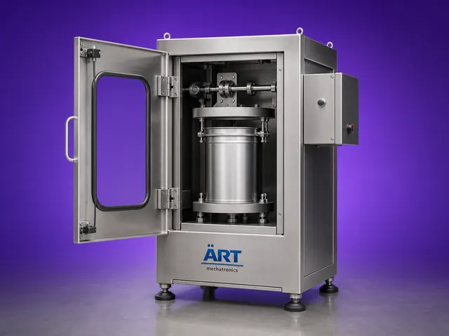
Shaker Machine
A Shaker Machine, also known as a Bottle Shaker, Container Shaking Machine, or Industrial Mixing Shaker System, is a…
View details →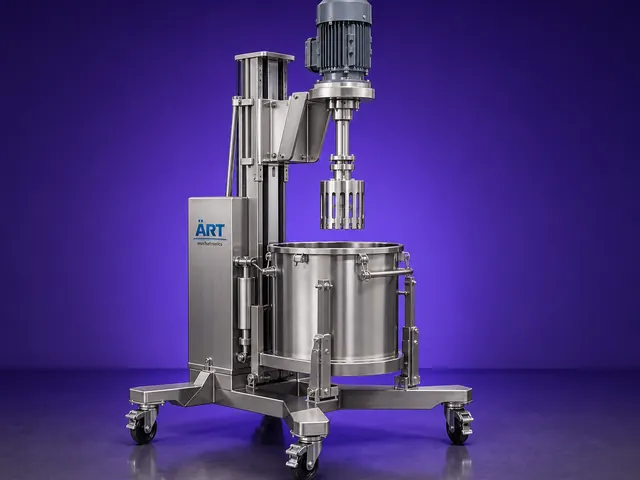
High Shear Mixer
A High Shear Mixer Machine, also known as a High Shear Homogenizer, High Speed Emulsifier, or Rotor Stator Mixer, is…
View details →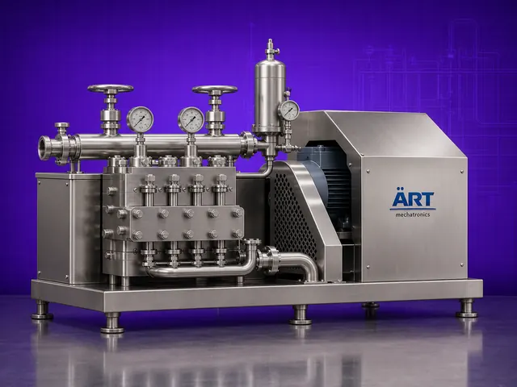
Homogenizer Machine
A Homogenizer Machine, also known as an Industrial Homogenizer or High Pressure Homogenizer, is an advanced processing…
View details →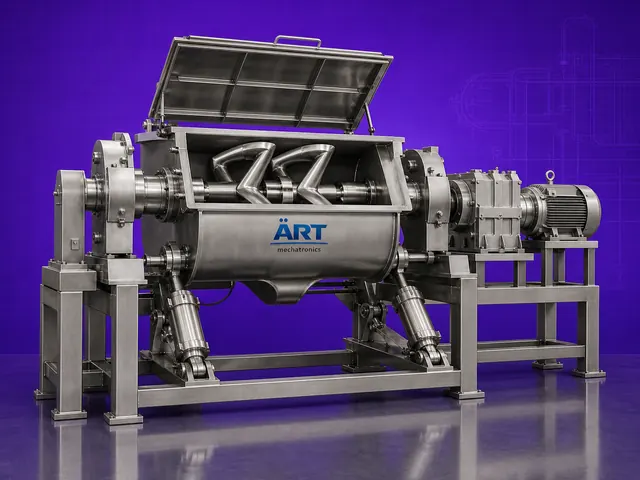
Sigma Mixer
A Sigma Mixer Machine, also known as a Sigma Kneader, Double Arm Kneader, or Heavy Duty Paste Mixer, is a specialized…
View details →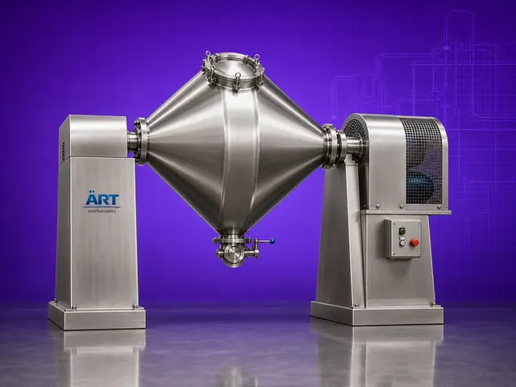
Double Cone Mixer
A Double Cone Mixer Machine, also known as a Double Cone Blender or Double Cone Powder Mixer, is a highly efficient…
View details →V Mixer
A V Mixer Machine, also known as a V Blender, V Cone Mixer, or V Shape Powder Blender, is a precision industrial…
View details →Mixer Automation System
A Mixer Automation System, also known as an Automatic Batching & Mixing System or Automated Industrial Mixing Plant,…
View details →Pre Cleaner Machine
A Pre Cleaner Machine, also known as an Industrial Grain Pre Cleaner or Seed Cleaning Machine, is an essential…
View details →Destoner Machine
A Destoner Machine, also known as a Stone Separator Machine, Grain Destoner, or Vibro Destoning System, is an…
View details →Vibro Machine
A Vibro Machine, also known as a Vibro Sifter, Vibrating Separator, or Industrial Vibro Screening Machine, is a highly…
View details →Siever Machine
A Siever Machine, also known as an Industrial Sieving Machine, Powder Siever, or Vibro Siever, is an essential…
View details →Separator Machine
A Separator Machine, also known as an Industrial Separator, Vibro Separator, or Material Separation System, is an…
View details →Scourer Machine
A Scourer Machine, also known as a Grain Scourer, Seed Scourer, or Industrial Surface Cleaning Machine, is a…
View details →Sifter Machine
A Sifter Machine, also known as an Industrial Sifter, Vibro Sifter, or Powder Screening Machine, is an essential…
View details →Screener Machine
A Screener Machine, also known as an Industrial Screening Machine, Vibratory Screener, or Material Screening System,…
View details →Grader Machine
A Grader Machine, also known as an Industrial Grading Machine, Size Grader, or Material Classification System, is an…
View details →Air Classifier
An Air Classifier Machine, also known as an Industrial Air Classifier or Fine Powder Classification System, is an…
View details →Dust Separator
A Dust Separator Machine, also known as an Industrial Dust Separation System, Air Dust Separator, or Fine Particle…
View details →Cyclone Separator
A Cyclone Separator Machine, also known as an Industrial Cyclone Dust Separator or Cyclonic Air Separation System, is…
View details →Color Sorter
A Color Sorter Machine, also known as a Sortex Machine, Optical Sorting Machine, or Color Sorting System, is an…
View details →Peeler Machine
A Peeler Machine, also known as an Industrial Peeling Machine or Fruit & Vegetable Peeler, is an advanced food…
View details →Washer Machine
A Washer Machine, also known as an Industrial Washing Machine or Fruit & Vegetable Washing Machine, is an essential…
View details →Polisher Machine
A Polisher Machine, also known as an Industrial Polishing Machine or Grain Polisher, is a specialized industrial…
View details →Gravity Separator
A Gravity Separator Machine, also known as an Industrial Gravity Separator or Density Separation Machine, is an…
View details →Plan Sifter
A Plan Sifter Machine, also known as a Plansifter, Multi Deck Sifter, or Industrial Flour Sifting System, is a highly…
View details →Magnetic Separator
A Magnetic Separator Machine, also known as an Industrial Magnetic Separator or Metal Separation System, is an…
View details →Air Aspirator
An Air Aspirator Machine, also known as an Industrial Air Aspirator or Air Separation System, is an essential…
View details →Air Screen Cleaner
An Air Screen Cleaner Machine, also known as an Industrial Air Screen Cleaner or Grain & Seed Cleaning Machine, is a…
View details →Metal Detector
A Metal Detector Machine, also known as an Industrial Metal Detection System or Food Metal Detector, is an advanced…
View details →X Ray Inspection
An X-Ray Inspection Machine, also known as an Industrial X-Ray Inspection System or Food X-Ray Scanner, is an advanced…
View details →Winnower Machine
A Winnower Machine, also known as a Winnowing Machine or Industrial Air Separation Machine, is an advanced industrial…
View details →Centralised Dust Collection System
A Centralized Dust Collection System, also known as an Industrial Dust Collector System or Central Dust Extraction…
View details →Conveyor Belt
A Conveyor Belt Machine, also known as an Industrial Belt Conveyor or Material Handling Conveyor System, is an…
View details →Inclined Conveyor Belt
An Inclined Conveyor Belt Machine, also known as an Industrial Inclined Belt Conveyor or Incline Conveyor System, is a…
View details →Screw Conveyor
A Screw Conveyor Machine, also known as an Industrial Screw Conveyor or Auger Conveyor System, is a highly efficient…
View details →Inclined Screw Conveyor
An Inclined Screw Conveyor Machine, also known as an Industrial Inclined Screw Conveyor or Inclined Auger Conveyor…
View details →Shaftless Screw Conveyor
A Shaftless Screw Conveyor Machine, also known as a Shaftless Auger Conveyor or Industrial Shaftless Spiral Conveyor,…
View details →Sack Conveyor
A Sack Conveyor Machine, also known as a Bag Conveyor System or Industrial Sack Handling Conveyor, is a specialized…
View details →Roller Conveyor
A Roller Conveyor Machine, also known as an Industrial Roller Conveyor or Roller Material Handling System, is a highly…
View details →Cleat Conveyor
A Cleat Conveyor Machine, also known as a Cleated Belt Conveyor or Industrial Cleat Conveyor System, is a specialized…
View details →Spiral Conveyor
A Spiral Conveyor Machine, also known as an Industrial Spiral Conveyor or Vertical Spiral Conveying System, is an…
View details →Vertical Conveyor
A Vertical Conveyor Machine, also known as an Industrial Vertical Conveyor or Vertical Material Handling System, is a…
View details →Telescopic Conveyor
A Telescopic Conveyor Machine, also known as an Industrial Telescopic Conveyor or Extendable Belt Conveyor System, is…
View details →Loading & Unloading Conveyor
A Loading & Unloading Conveyor Machine, also known as a Truck Loading Conveyor, Container Loading Conveyor, or…
View details →Pipe Conveyor
A Pipe Conveyor Machine, also known as a Pipe Belt Conveyor or Industrial Pipe Conveyor System, is an advanced…
View details →Disc Conveyor
A Disc Conveyor Machine, also known as a Tubular Disc Conveyor or Disc Chain Conveyor System, is an advanced…
View details →Apron Conveyor
An Apron Conveyor Machine, also known as an Apron Feeder Conveyor or Industrial Apron Conveyor System, is a heavy-duty…
View details →Slat Conveyor
A Slat Conveyor Machine, also known as a Slat Chain Conveyor or Industrial Slat Conveyor System, is a robust…
View details →Vibratory Conveyor
A Vibratory Conveyor Machine, also known as a Vibrating Conveyor or Industrial Vibratory Conveyor System, is an…
View details →Chain Conveyor
A Chain Conveyor Machine, also known as an Industrial Chain Conveyor or Chain Driven Conveyor System, is a robust…
View details →Drag Chain Conveyor
A Drag Chain Conveyor Machine, also known as a Drag Conveyor, En Masse Conveyor, or Industrial Drag Chain Conveyor…
View details →Pneumatic Conveyor
A Pneumatic Conveyor Machine, also known as a Pneumatic Conveying System or Industrial Air Conveying System, is an…
View details →Vacuum Conveyor
A Vacuum Conveyor Machine, also known as a Vacuum Conveying System or Industrial Vacuum Powder Conveyor, is an…
View details →Robot Conveyor
A Robot Conveyor Machine, also known as a Robotic Conveyor System or Industrial Robot Conveyor Automation System, is…
View details →Automated Guided Vehicle (AGV)
An Automated Guided Vehicle (AGV) Machine, also known as an Industrial AGV System or Autonomous Material Handling…
View details →Autonomous Mobile Robot - Amr (AMR)
An Autonomous Mobile Robot (AMR) Machine, also known as an Industrial AMR System or Intelligent Mobile Robot, is an…
View details →Robotic Arm
A Robotic Arm Machine, also known as an Industrial Robotic Arm or Robot Arm Automation System, is an advanced…
View details →
Pick & Place Robot
A Pick & Place Robot Machine, also known as a Pick and Place Robotic System or Industrial Pick & Place Robot, is an…
View details →Palletizer & De Palletizer Robot
A Palletizer & Depalletizer Robot Machine, also known as a Robotic Palletizing System or Industrial Pallet Handling…
View details →Sorting Robot
A Sorting Robot Machine, also known as a Robotic Sorting System or Industrial Sorting Automation Machine, is an…
View details →Material Handling Robot
A Material Handling Robot Machine, also known as an Industrial Material Handling Robot or Robotic Material Transfer…
View details →Packaging Robot
A Packaging Robot Machine, also known as a Robotic Packaging System or Industrial Packaging Robot, is an advanced…
View details →Bucket Elevator
A Bucket Elevator Machine, also known as a Bucket Conveyor Elevator or Industrial Bucket Elevator System, is a highly…
View details →Z Type Elevator
A Z Type Elevator Machine, also known as a Z Type Bucket Elevator, Z Conveyor, or Industrial Z Type Elevator Conveyor,…
View details →Single Bucket Elevator
A Single Bucket Elevator Machine, also known as a Single Bucket Conveyor Elevator or Industrial Single Bucket Lifting…
View details →Storage Tank
A Storage Tank, also known as an Industrial Storage Tank or Bulk Material Storage System, is a heavy-duty industrial…
View details →Hopper Machine
A Hopper Machine, also known as an Industrial Hopper, Storage Hopper, or Material Feeding Hopper System, is an…
View details →Silo Machine
A Silo Machine, also known as an Industrial Storage Silo or Bulk Material Silo System, is a large-capacity industrial…
View details →Day Bin
A Day Bin Machine, also known as an Industrial Day Bin, Material Buffer Bin, or Intermediate Storage Bin System, is an…
View details →Bag Dump Station
A Bag Dump Station, also known as a Bag Unloading Station, Manual Bag Feeding Station, or Bulk Bag Dumping System, is…
View details →Storage Pit
A Storage Pit, also known as an Industrial Material Storage Pit, Underground Storage Pit, or Bulk Material Collection…
View details →Scissor Lift
A Scissor Lift, also known as a Hydraulic Scissor Lift Platform, Industrial Lift Table, or Material Lifting Platform,…
View details →Goods Lift
A Goods Lift Machine, also known as a Goods Elevator, Industrial Material Lift, or Cargo Lift System, is a heavy-duty…
View details →Car Parking Lift
A Car Parking Lift, also known as a Car Stacker Machine, Automated Car Parking System, or Vehicle Parking Lift, is an…
View details →Plc Automation Control Panel
A PLC Automation Control Panel, also known as a PLC Control System, Industrial Automation Panel, or Programmable Logic…
View details →Centralised Automation System
A Complete Unit Centralised Automation System, also known as a Centralized Plant Automation System, Integrated…
View details →Vibratory Feeder
A Vibratory Feeder Machine, also known as a Vibrating Feeder, Vibro Feeder, or Industrial Vibratory Feeding System, is…
View details →Rotary Collecting Table
A Rotary Collecting Table Machine, also known as a Rotary Accumulation Table, Rotating Collection Table, Packet…
View details →Industrial Movable Trolley
An Industrial Movable Trolley, also known as a Material Handling Trolley, Industrial Transfer Cart, Material Carrying…
View details →
Form Fill Seal (FFS)
A Form Fill Seal Packing Machine, also known as an FFS Packaging Machine, Automatic Pouch Packing Machine, or Forming…
View details →
Vertical Form Fill Seal (VFFS)
A Vertical Form Fill Seal (VFFS) Packing Machine, also known as a Vertical Pouch Packing Machine, Automatic VFFS…
View details →
Horizontal Form Fill Seal (HFFS)
A Horizontal Form Fill Seal (HFFS) Packing Machine, also known as a Horizontal Packaging Machine, Flow Wrap Machine,…
View details →Multi Head Weigher
A Multi Head Weigher Packing Machine, also known as a Multihead Weighing System, Combination Weigher Machine, or…
View details →Auger Filler
An Auger Filler Packing Machine, also known as an Automatic Powder Filling Machine, Auger Filling System, or Screw…
View details →Cup Filler
A Cup Filler Packing Machine, also known as a Volumetric Cup Filling Machine, Cup Filling System, or Automatic Cup…
View details →
Pneumatic Packing Machine
A Pneumatic Packing Machine, also known as an Air Operated Packaging Machine, Pneumatic Pouch Packing Machine, or…
View details →
D Motion
A D Motion Packing Machine, also known as a Continuous Motion Packaging Machine, Dynamic Motion Packing Machine, or…
View details →
Mechanical Packing Machine
A Mechanical Packing Machine, also known as a Mechanical Packaging Machine, Cam Operated Packing Machine, or…
View details →
Servo Driven
A Servo Driven Packing Machine, also known as a Servo Packaging Machine, Servo Controlled Pouch Packing Machine, or…
View details →Collar Type
A Collar Type Packing Machine, also known as a Collar Pouch Packing Machine, Collar Type FFS Machine, or Vertical…
View details →
Rotary Packing Machine
A Rotary Packing Machine, also known as a Rotary Pouch Packing Machine, Rotary Packaging System, or Rotary Filling &…
View details →3 Side Seal
A 3 Side Seal Packing Machine, also known as a Three Side Seal Pouch Packing Machine, 3 Side Seal Sachet Packing…
View details →
4 Side Seal
A 4 Side Seal Packing Machine, also known as a Four Side Seal Packing Machine, 4 Side Seal Sachet Packing Machine, or…
View details →
Center Seal
A Center Seal Packing Machine, also known as a Center Seal Pouch Packing Machine, Middle Seal Packaging Machine, or…
View details →
Pack Fill Seal
A Pack Fill Seal Packing Machine, also known as a PFS Packaging Machine, Pack Fill Seal Machine, or Automatic Pouch…
View details →
Multi Track
A Multi Track Packing Machine, also known as a Multi Lane Packaging Machine, Multi Track Sachet Packing Machine, or…
View details →
Multi Lane
A Multi Lane Packing Machine, also known as a Multi Lane Sachet Packing Machine, Multi Channel Packaging Machine, or…
View details →
Pouch Filling
A Pouch Filling Machine, also known as an Automatic Pouch Filling Machine, Pouch Filling & Sealing Machine, or Pouch…
View details →Pouch Sealing
A Pouch Sealing Machine, also known as an Automatic Pouch Sealer Machine, Pouch Sealer, or Industrial Pouch Sealing…
View details →
Strip Collator
A Strip Collator Machine, also known as a Strip Collecting Machine, Automatic Strip Collating System, or Strip…
View details →Pouch Stacking
A Pouch Stacking Machine, also known as an Automatic Pouch Stacker Machine, Pouch Collecting & Stacking Machine, or…
View details →
Pouch Counting
A Pouch Counting Machine, also known as an Automatic Pouch Counting Machine, Packet Counting Machine, Sachet Counting…
View details →
Band Sealer
A Band Sealer Machine, also known as a Continuous Band Sealing Machine, Continuous Pouch Sealer, or Industrial Band…
View details →Vacuum Packing Machine
A Vacuum Packing Machine, also known as a Vacuum Packaging Machine, Vacuum Sealing Machine, or Industrial Vacuum…
View details →
Flow Wrap
A Flow Wrap Packing Machine, also known as a Horizontal Flow Wrap Machine, Pillow Pack Packaging Machine, Flow Pack…
View details →Dosing & Flow Wrapping
A Dosing & Flow Wrapping Machine, also known as a Filling & Flow Wrap Packaging Machine, Dosing Flow Wrap System, or…
View details →Web Sealer
A Web Sealer Machine, also known as a Web Sealing Machine, Automatic Web Sealer, L-Sealer Packaging Machine, or Shrink…
View details →L Sealer
An L Sealer Machine, also known as an L Sealing Machine, L Bar Sealer, Shrink Wrapping L Sealer, or Automatic L Seal…
View details →Heat Shrink Tunnel
A Heat Shrink Tunnel Machine, also known as a Shrink Tunnel Machine, Heat Tunnel Packaging Machine, Shrink Wrapping…
View details →Nitrogen Packing
A Nitrogen Filled Packing Machine, also known as a Nitrogen Flushing Packaging Machine, Nitrogen Gas Packing Machine,…
View details →Batch Cutter
A Packing Machine with Batch Cutter, also known as a Strip Cutting Packing Machine, Automatic Batch Cutter Packaging…
View details →
Retort Pouch
A Retort Pouch Packing Machine, also known as a Retort Packaging Machine, Retort Pouch Filling & Sealing Machine, or…
View details →
Premade Pouch
A Premade Pouch Packing Machine, also known as an Automatic Premade Pouch Packaging Machine, Premade Pouch Filling…
View details →
Zip Lock/ Zipper Pouch
A Zip Lock / Zipper Pouch Packaging Machine, also known as a Zipper Pouch Packing Machine, Zip Lock Bag Packaging…
View details →Doypack Packaging Machine
A Doypack Packaging Machine, also known as a Doypack Pouch Packing Machine, Stand-Up Pouch Packaging Machine, Premade…
View details →
Standup Pouch
A Stand Up Pouch Packaging Machine, also known as a Stand-Up Pouch Packing Machine, Premade Pouch Packaging Machine,…
View details →
Pillow Pack
A Pillow Pack Packaging Machine, also known as a Pillow Pouch Packing Machine, Center Seal Packaging Machine, VFFS…
View details →
Premade Bag
A Pre Made Bag Packaging Machine, also known as an Automatic Premade Bag Packaging Machine, Premade Pouch Filling…
View details →Tea Bag
A Tea Bag Packaging Machine, also known as a Tea Bag Packing Machine, Tea Pouch Packaging Machine, Tea Sachet Filling…
View details →Oral Pouches
An Oral Pouches Packaging Machine, also known as a Nicotine Pouch Packaging Machine, Snus Pouch Packing Machine, Snuff…
View details →
Pouch Packaging Machine
A Pouch Packaging Machine, also known as a Pouch Packing Machine, Pouch Filling & Sealing Machine, Automatic Pouch…
View details →
Sachet Packaging Machine
A Sachet Packaging Machine, also known as a Sachet Packing Machine, Sachet Filling & Sealing Machine, Multi Lane…
View details →
Stick Packaging Machine
A Stick Packaging Machine, also known as a Stick Pack Packaging Machine, Stick Pack Filling Machine, Multi Lane Stick…
View details →
Packet Packaging Machine
A Packet Packaging Machine, also known as a Packet Packing Machine, Packet Filling & Sealing Machine, Automatic Packet…
View details →
Wrapper Packaging Machine
A Wrapper Packaging Machine, also known as a Wrapping Machine, Flow Wrap Packaging Machine, Horizontal Wrapping…
View details →Strip Packaging Machine
A Strip Packaging Machine, also known as a Strip Pack Machine, Strip Packing Machine, Automatic Strip Sealing Machine,…
View details →
Cartoning Machine
A Cartoning Machine, also known as an Automatic Cartoning Machine, Mono Carton Packaging Machine, Unit Carton Packing…
View details →
Overwrapping Machine
An Overwrapping Machine, also known as a Cellophane Wrapping Machine, Carton Overwrapping Machine, Unit Carton…
View details →Collating & Cartoning
A Collating & Cartoning Machine, also known as an Automatic Collating Machine, Product Grouping & Cartoning Machine,…
View details →
Count & Stack
A Counting & Stacking Machine, also known as an Automatic Counting Machine, Product Stacking Machine, Sachet Counting…
View details →Lined Carton
A Lined Carton Packing Machine, also known as a Lined Box Packing Machine, Inner Lined Carton Packaging Machine,…
View details →Robotic Case Packer
A Robotic Case Packer Machine, also known as an Automatic Case Packing Machine, Robotic Carton Packing System,…
View details →
Load Cartoner
A Load Cartoner Machine, also known as an Automatic Loading Cartoner, Product Loading & Cartoning Machine, End-of-Line…
View details →Mono Carton Packing
A Mono Carton Packaging Machine, also known as a Mono Carton Packing Machine, Automatic Cartoning Machine, Carton…
View details →
Unit Carton Packing
A Unit Carton Packing Machine, also known as a Unit Carton Packaging Machine, Mono Carton Packing Machine, Automatic…
View details →
Master Carton Packing
A Master Carton Packing Machine, also known as a Master Carton Packaging Machine, Corrugated Box Packing Machine, Case…
View details →Master Case Packing
A Master Case Packing Machine, also known as an Automatic Case Packing Machine, Corrugated Case Packing Machine,…
View details →
Sack & Bag Filling Machine
A Sack & Bag Filling Machine, also known as a Bag Filling Machine, Sack Filling System, Bulk Bag Filling Machine, or…
View details →
Bagging Machine
A Bagging Machine, also known as an Automatic Bagging Machine, Bag Filling Machine, Industrial Bagging System, or Bulk…
View details →Weighing & Dosing
A Weighing & Dosing Machine for Sacks & Bags, also known as a Bag Weighing Machine, Sack Dosing Machine, Automatic…
View details →Sack & Bag Sewing Machine
A Sack & Bag Sewing Machine, also known as a Bag Stitching Machine, Sack Stitching Machine, Bag Closing Machine, or…
View details →
Sack & Bag Stitching Machine
A Sack & Bag Stitching Machine, also known as a Bag Stitching Machine, Sack Stitching Machine, Bag Closing Machine, or…
View details →Stretch Wrapping
A Stretch Film Wrapping Machine for Sacks & Bags, also known as a Pallet Wrapping Machine, Stretch Wrapping Machine,…
View details →Bag Packing
A Bag Packing Machine, also known as a Bag Filling Machine, Bag Packaging Machine, Automatic Bagging Machine, or…
View details →
Sack Packing
A Sack Packing Machine, also known as a Sack Filling Machine, Bagging Machine, Jumbo Bag Filling Machine, or Automatic…
View details →Can, Jar & Box Rinsing Machine
A Can, Jar & Box Rinsing Machine, also known as a Container Rinsing Machine, Jar Cleaning Machine, Can Washing…
View details →Can, Jar & Box Filling Machine
A Can, Jar & Box Filling Machine, also known as a Container Filling Machine, Jar Filling Machine, Can Filling Machine,…
View details →Seaming Machine
A Seaming Machine, also known as a Can Seaming Machine, Can Closing Machine, Container Sealing Machine, or Automatic…
View details →Can, Jar & Box Sealing Machine
A Can, Jar & Box Sealing Machine, also known as a Container Sealing Machine, Jar Sealing Machine, Can Sealing Machine,…
View details →Cap Lid Pressing
A Cap & Lid Pressing Machine, also known as a Lid Pressing Machine, Cap Pressing Machine, Jar Lid Press Machine, or…
View details →Leak Tester
A Leak Tester Machine for Cans & Jars, also known as a Container Leak Testing Machine, Can Leak Detector, Jar Leak…
View details →Servo Auger Filling
A Servo Auger Filling Machine for Cans & Jars, also known as an Auger Powder Filling Machine, Servo Powder Filling…
View details →Wraparound Labelling
A Wraparound Labelling Machine for Cans & Jars, also known as a Sticker Labeling Machine, Bottle Labeling Machine,…
View details →Can Packing
A Can Packing Machine, also known as a Tin Can Filling Machine, Metal Can Packaging Machine, Can Filling & Sealing…
View details →
Tin Box Packing
A Tin Box Packing Machine, also known as a Tin Filling Machine, Tin Container Packaging Machine, Metal Box Packing…
View details →Jar Packing
A Jar Packing Machine, also known as a Jar Filling Machine, Bottle Jar Packaging Machine, Container Filling Machine,…
View details →Cup & Tray Forming Machine
A Cup & Tray Forming Machine, also known as a Thermoforming Machine, Cup Forming Machine, Tray Forming Machine, or…
View details →Cup & Tray Filling Machine
A Cup & Tray Filling Machine, also known as a Cup Filling Machine, Tray Filling Machine, Food Container Filling…
View details →Cup & Tray Sealing Machine
A Cup & Tray Sealing Machine, also known as a Cup Sealing Machine, Tray Sealing Machine, Food Container Sealer, or…
View details →Map Tray Sealing
A MAP Tray Sealing Machine, also known as a Modified Atmosphere Packaging Machine, MAP Tray Sealer, Vacuum Gas…
View details →Thermoforming Sealing
A Thermoforming Sealing Machine, also known as a Thermoform Packaging Machine, Vacuum Thermoforming Machine, Rollstock…
View details →Cup Packing
A Cup Packaging Machine, also known as a Cup Filling Machine, Cup Sealing Machine, Cup Filling & Sealing Machine, or…
View details →
Tray Packing
A Tray Packaging Machine, also known as a Tray Sealing Machine, Food Tray Packaging Machine, MAP Tray Sealer, or…
View details →
Container Rinsing Machine
A Container Rinsing Machine, also known as a Bottle Rinsing Machine, Jar Washing Machine, Container Cleaning Machine,…
View details →Container Cleaning Machine
A Container Cleaning Machine, also known as a Bottle Cleaning Machine, Jar Washing Machine, Industrial Container…
View details →
Container Filling Machine
A Container Filling Machine, also known as a Liquid Filling Machine, Bottle Filling Machine, Jar Filling Machine, or…
View details →Container Capping Machine
A Container Capping Machine, also known as a Bottle Capping Machine, Cap Tightening Machine, Jar Capping Machine, or…
View details →Container Sealing Machine
A Container Sealing Machine, also known as a Bottle Sealing Machine, Jar Sealing Machine, Container Closure Machine,…
View details →Container Crimping Machine
A Container Crimping Machine, also known as a Bottle Crimping Machine, Cap Crimping Machine, Spray Pump Crimping…
View details →Collar Fitting
A Collar Fitting Machine, also known as a Bottle Collar Placement Machine, Container Collar Fitting System, Collar…
View details →Container Decapper Machine
A Container Decapper Machine, also known as a Bottle Decapping Machine, Cap Removing Machine, Automatic Container…
View details →Leak Detector
A Container Leak Detector Machine, also known as a Bottle Leak Testing Machine, Leak Inspection Machine, Container…
View details →Over Wrapping
A Container Overwrapping Machine, also known as an Over Wrapping Machine, Film Wrapping Machine, Container Film…
View details →L Sealer With Heat Shrink Tunnel
An Automatic Sealer with Heat Shrink Tunnel Machine, also known as a Shrink Wrapping Machine, Heat Tunnel Packaging…
View details →
Wraparound Labelling
A Wrap Around Labelling Machine, also known as a Sticker Labeling Machine, Container Label Applicator, Automatic Wrap…
View details →Servo Filling
A Servo Filling Machine, also known as a Servo Controlled Filling Machine, Automatic Liquid Filling Machine, Precision…
View details →Piston Filling
A Piston Filling Machine, also known as a Piston Filler, Volumetric Piston Filling Machine, Paste Filling Machine, or…
View details →Servo Nozzle Tracking Filling
A Servo Nozzle Tracking Filling Machine, also known as a Servo Filling Machine, Nozzle Tracking Filling System,…
View details →Palletized Drum Filling
A Palletized Drum Filling Machine, also known as a Drum Filling System on Pallets, Pallet Drum Filling Machine,…
View details →Bottle Packing
A Bottle Packaging Machine, also known as a Bottle Filling Machine, Bottle Packing Machine, Beverage Bottle Packaging…
View details →Jerry Can Packing
A Jerry Can Packaging Machine, also known as a Jerry Can Filling Machine, Jerry Can Sealing Machine, Industrial Liquid…
View details →Cannister Packing
A Cannister Packaging Machine, also known as a Canister Filling Machine, Container Packaging Machine, Powder Canister…
View details →Bucket Packing
A Bucket Packaging Machine, also known as a Bucket Filling Machine, Pail Filling Machine, Bucket Sealing Machine, or…
View details →Jar/ Jug Packing
A Jar & Jug Packaging Machine, also known as a Jar Filling Machine, Jug Filling Machine, Container Packaging Machine,…
View details →
Drum Packing
A Drum Packaging Machine, also known as a Drum Filling Machine, Drum Sealing Machine, Barrel Filling Machine, or…
View details →Gallon Packing
A Gallon Packaging Machine, also known as a Gallon Filling Machine, Gallon Water Packaging Machine, Large Container…
View details →Secondary Packaging Automation
A Secondary Packaging Automation System, also known as an End of Line Packaging System, Secondary Packing Line,…
View details →Palletizer Machine
A Palletizer Machine, also known as a Palletizing System, Robotic Palletizer, Automatic Pallet Stacker, or End of Line…
View details →Robotic Pick & Place
A Robotic Pick & Place Arm for Packaging, also known as a Packaging Robot, Robotic Pick & Place System, Industrial…
View details →Delta Robot
A Delta Robot Machine for Packaging, also known as a Delta Pick & Place Robot, High-Speed Packaging Robot, Parallel…
View details →Agv/ Amr
An AGV / AMR Machine, also known as an Automated Guided Vehicle, Autonomous Mobile Robot, Industrial Mobile Robot, or…
View details →Complete Packaging Automation
A Unit Packaging Automation System, also known as a Primary Packaging Automation Line, Automatic Unit Packing System,…
View details →Rewinder Machine
A Rewinder Machine, also known as a Slitting Rewinding Machine, Roll Rewinder, Film Rewinding Machine, or Industrial…
View details →
Industrial Printer Machine
An Industrial Printer Machine, also known as a Batch Coding Machine, Product Marking System, Industrial Inkjet…
View details →
Labelling Machine
A Labelling Machine, also known as a Sticker Labeling Machine, Label Applicator Machine, Automatic Labeling System, or…
View details →Batch Coding
A Batch Coding Machine, also known as a Date Coding Machine, Expiry Printing Machine, Product Marking Machine, or…
View details →Checkweigher With Printer
A Checkweigher with Printer Machine, also known as a Carton Weighing & Printing System, Automatic Checkweigher with…
View details →Metal Detection
A Metal Detection System, also known as an Industrial Metal Detector Machine, Product Contamination Detection System,…
View details →X Ray Inspection
An X Ray Inspection Machine, also known as an Industrial X-Ray Inspection System, Product Inspection Machine,…
View details →Vision Inspection
A Vision Inspection Machine, also known as an Industrial Vision Inspection System, Camera Inspection Machine,…
View details →Auto Reject System
An Auto Reject System for Packaging Process, also known as an Automatic Product Rejection System, Packaging Reject…
View details →Blade Cutter
An Industrial Blade Cutter Machine, also known as a Heavy Duty Cutting Machine, Industrial Knife Cutter, Material…
View details →Knife Cutter
An Industrial Knives Cutter Machine, also known as an Industrial Knife Cutting Machine, Heavy Duty Knife Cutter,…
View details →Gear Cutter
An Industrial Gear Cutter Machine, also known as a Gear Cutting Machine, Gear Manufacturing Machine, Gear Hobbing…
View details →Roller Cutter
An Industrial Roller Cutter Machine, also known as a Roller Cutting Machine, Rotary Roller Cutter, Roller Slitting…
View details →Cube Cutter
An Industrial Cube Cutter Machine, also known as a Dicing Machine, Food Cube Cutting Machine, Vegetable Cube Cutter,…
View details →Traditional Cutter
A Traditional Cutter Machine, also known as a Mechanical Cutter Machine, Conventional Cutting Machine, Industrial…
View details →Cutter With Sifter
A Cutter with Sifter Machine, also known as a Cutting & Sieving Machine, Cutter Cum Sifter, Industrial Cutting and…
View details →Industrial Slicer Machine
An Industrial Slicer Machine, also known as a Food Slicing Machine, Automatic Slicer, Industrial Cutting & Slicing…
View details →Industrial Dicer Machine
An Industrial Dicer Machine, also known as a Food Dicing Machine, Automatic Dicer, Cube Cutting Machine, or Industrial…
View details →Industrial Chopper Machine
An Industrial Chopper Machine, also known as a Food Chopping Machine, Heavy Duty Chopper, Industrial Material Chopper,…
View details →Granulator Machine
A Granulator Machine, also known as an Industrial Granulating Machine, Material Granulator, Size Reduction Machine, or…
View details →Shredder Machine
A Shredder Machine, also known as an Industrial Shredder, Material Shredding Machine, Industrial Waste Shredder, or…
View details →Grinder Machine
A Grinder Machine, also known as an Industrial Grinding Machine, Pulverizer Machine, Material Grinding System, or…
View details →Crusher Machine
A Crusher Machine, also known as an Industrial Crusher, Crushing Machine, Material Crusher, or Industrial Size…
View details →Splitter Machine
A Splitter Machine, also known as an Industrial Splitting Machine, Material Splitter, Product Splitting Machine, or…
View details →Reclaimer Machine
A Reclaimer Machine, also known as a Material Recovery Machine, Industrial Reclaiming System, Tobacco Reclaimer…
View details →Stem Removal
A Stem Removal Machine, also known as a Destemming Machine, Stem Separation Machine, Industrial Stem Remover, or…
View details →Seed Removal
A Seed Removal Machine, also known as a Deseeding Machine, Seed Separation Machine, Fruit Seed Remover, or Industrial…
View details →Skin Removal
A Skin Removal Machine, also known as a Peeling Machine, Skin Separation Machine, Industrial Peeler, or Automatic…
View details →Shell Removal
A Shell Removal Machine, also known as a Shelling Machine, Decortication Machine, Nut Shelling Machine, or Industrial…
View details →Dehusking Machine
A Dehusking Machine, also known as a Husk Removal Machine, Decortication Machine, Grain Dehusker, or Industrial Husk…
View details →Chipper Machine
A Chipper Machine, also known as a Wood Chipper Machine, Biomass Chipper, Industrial Chipping Machine, or Material…
View details →Surface Grinder
A Surface Grinder Machine, also known as a Surface Grinding Machine, Blade Sharpening Machine, Precision Surface…
View details →Freeze Dryer
A Freeze Dryer Machine, also known as a Lyophilizer, Freeze Drying Machine, Vacuum Freeze Dryer, or Industrial…
View details →Chiller Machine
A Chiller Machine, also known as an Industrial Chiller, Cooling System, Forced Draft Chiller, or Industrial…
View details →Cooling Tower
A Cooling Tower Machine, also known as an Industrial Cooling Tower, Water Cooling System, Heat Rejection Tower, or…
View details →Air Handling Unit
An Air Handling Unit Machine, also known as an AHU System, Industrial Air Handling Unit, HVAC Air Management System,…
View details →Dehumidifier Machine
A Dehumidifier Machine, also known as an Industrial Dehumidifier, Moisture Removal System, Air Drying Unit, or…
View details →Blast Freezer
A Blast Freezer Machine, also known as a Shock Freezer, Rapid Freezing Machine, Industrial Blast Freezer, or Quick…
View details →Iqf Freezer
An IQF Freezer Machine, also known as an Individual Quick Freezing Machine, IQF System, Fluidized Bed Freezer, or…
View details →Cold Storage/ Cold Room
A Cold Storage Machine, also known as a Cold Room, Refrigerated Storage System, Industrial Cold Room, or Temperature…
View details →Cooling Conveyor
A Cooling Conveyor Machine, also known as a Cooling Conveyor System, Industrial Product Cooling Conveyor, Conveyor…
View details →Cooling Tunnel
A Cooling Tunnel Machine, also known as a Cooling Tunnel System, Industrial Cooling Tunnel, Product Stabilization…
View details →Hvac System
An HVAC Machine, also known as an HVAC System, Industrial Heating Ventilation & Air Conditioning System, Climate…
View details →Hydraulic Press/ Bailing Press
A Hydraulic Press Machine, also known as a Baling Press Machine, Hydraulic Compression Machine, Industrial Baler, or…
View details →Blower Fan
An Industrial Blower Fan, also known as an Industrial Air Blower, Centrifugal Blower, Axial Flow Fan, or Industrial…
View details →Moisture Analyzer
A Moisture Analyzer Machine, also known as a Moisture Testing Machine, Moisture Measurement System, Digital Moisture…
View details →Industrial & Agriculture Drone
An Industrial & Agriculture Drone, also known as a UAV Drone, Smart Industrial Drone, Agricultural Spraying Drone, or…
View details →Industrial Spare Parts & Consumables
Industrial Spare Parts & Consumables are critical components used for maintenance, repair, replacement, servicing,…
View details →No direct match? Tell us the function you need. Ask us on WhatsApp →